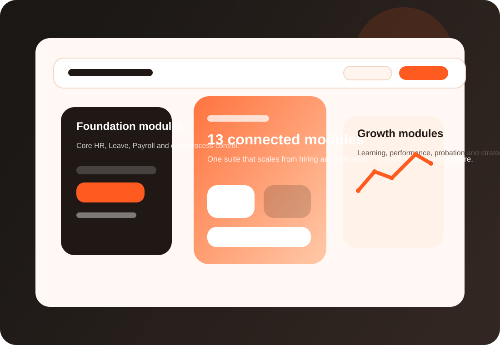

Dedicated modules across the employee journey.
FuzionHR Modules
A complete HRMS module stack built for the full employee lifecycle
Explore every FuzionHR module across hiring, onboarding, payroll, workforce administration, development and exit management from one connected product hub.

Platform Depth
13+
1 Hub
Cross-linked
Modular
Present the suite as a connected operating system for HR and business workflows
The stronger the module architecture looks, the easier it becomes for buyers to understand that FuzionHR is a complete platform rather than a set of disconnected tools.
A single navigation experience for product discovery.
SEO and conversion value from internal pathways.
Easy to sell in phased implementation packages.
Centralize employee records, organizational structure, documents and foundational HR data.
Manage openings, candidates, interviews and offer movement with greater hiring discipline.
Standardize every new-hire step from pre-joining to full operational readiness.
Deliver role clarity, culture orientation, compliance checklists and manager-led introductions.
Run timely review checkpoints, confirmations and development feedback during the probation window.
Coordinate training calendars, learning records and capability-building initiatives.
Apply policies, accruals, approvals and employee visibility across leave workflows.
Capture claims, documents, approvals and policy control around employee expenses.
Handle guest registration, approvals, security tracking and workplace reception efficiency.
Track vehicle usage, assignments, maintenance visibility and operational accountability.
Run payroll cycles, statutory workflows, revisions, deductions and employee salary communication.
Drive review consistency, manager feedback quality and stronger employee growth conversations.
Manage resignation, handover, asset return, settlement and closure with fewer blind spots.
Lifecycle Mapping
How the modules connect from hire to retire

How the suite tells a better product story
- Recruitment creates structure before the employee record exists.
- Onboarding and Induction improve early readiness and employee experience.
- Core HR, Leave, Payroll and L&D support day-to-day operations.
- Probation Evaluation, Performance and Exit Management complete the lifecycle with accountability.
Need help choosing the right module mix for your business?
Use pricing for packaging guidance or contact the team for a personalized module roadmap.